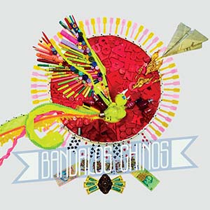

Inicio
Bandalos Chinos es una banda argentina de indie pop nacida en 2009 en la ciudad granbonaerense de Beccar

Biografía
Iñaki Colombo y Gregorio "Goyo" Degano se conocieron en el colegio en San Fernando y tocan juntos desde los catorce años. Cuando terminaron el secundario en 2009, armaron Bandalos Chinos en la ciudad de Beccar, en la zona norte del Gran Buenos Aires. Su primer disco fue editado en 2012 y llevó el nombre de la banda, siendo presentado en el Auditorium San Isidro el 26 de octubre de ese mismo año. Aunque según declaraciones de la banda, es un disco que sienten que no los representa, la banda contaba con una formación diferente; solo está disponible en Bandcamp y en formato físico.
Su tercer disco, Paranoia Pop, es lanzado el 9 de octubre de 2020, con la participación de artistas invitados como LOUTA, Tei Shi y David Aguilar. Como su antecesor, fue grabado en el estudio Sonic Ranch y contó con la producción de Adan Jodorowsky y la mezcla de Jack Lahana. A partir de este punto, a los shows en vivo se les sumó la percusión en vivo del músico y productor Maxi Sayes. Se desprenden temas como «Sin señal» o «Paranoia pop» a dúo con LOUTA.
La presentación del disco fue el 29 de octubre de 2020 con un musical por streaming en el Movistar Arena, comenzando así el Paranoia Tour. En 2021, realizan una gira extensa recorriendo todo México en los meses de agosto y septiembre, lanzando dos nuevos sencillos, finalizando el año el 11 de diciembre con un show en el Hipódromo de Palermo ante 5000 personas, siendo el show más multitudinario de su carrera y culminando el Paranoia Tour el 1° de mayo de 2022 en el festival Quilmes Rock.

Integrantes
Gregorio "Goyo" Degano
Salvador Colombo
Tomás Verduga
Matías Verduga
Iñaki Colombo
Nicolás Rodríguez del Pozo

Discografía
Su álbum debut, titulado "Bandalos Chinos" fue presentado en el Auditorium San Isidro, le valió una excelente recepción en el ámbito under, teniendo la oportunidad de tocar con otros grupos como Surfistas del Sistema, Desper-tar Antoles, Silvestre y La Naranja, Mompox y Santos Wussies, entre otros. Sale al mercado en 2012.
Con “Nunca Estuve Acá”, el cual se edita en 2014, siguen la línea de influencias del trabajo anterior, yendo también para el lado del electropop y synth con el agregado de sintetizadores en el lugar de protagonistas, dándole al disco una estructura más actual. Este EP contiene seis temas cargados de dulces y suaves melodías, que por momentos parece darle sentido al “origen” del nombre. El tema más synth es el que abre y le da nombre a la grabación, cargado de falsetes. “Correr” tranquiliza los ánimos y le pone el rumbo al disco, para darle paso a “Russia”. “Rana Fénix” contiene un ritmo similar al oriental, pero que se despega de esa etiqueta con las guitarras sólidas. Y el dúo “Chino Town” (una canción partida en dos) cierra perfectamente este material, logrando que Bandalos Chinos demuestre y sepa balancear su caudal de gustos en tan sólo seis temas.
El 4 de enero de 2017 editan "En el Aire", un EP de 5 canciones cuyo sencillo se titula "Dije Tu Nombre".
En el 2019 lanzan su álbum "Bach".
El 2 de agosto de 2019, lanzan con un video el sencillo "Departamento".
En mayo del 2020 estrenan el single "Mi Manera De Ser/AYNMG". El 23 de julio, "Sin Señal", el tercer adelanto de su nuevo disco, que verá la luz en unos pocos meses. En octubre lanzan finalmente un nuevo LP: "Paranoia Pop". En este disco, grabado al igual que "Bach", en Sonic Ranch (Texas, EEUU) junto a Adán Jodorowsky, la banda de Beccar profundiza el camino iniciado en "Bach", dejando cada vez más atrás las exploraciones indies de los EPs “En el Aire” (2017) y “Nunca Estuve Acá” (2015).
El 6 de mayo de 2022 lanzan el álbum "El Big Blue" de la mano de Adán Jodorowsky.
El 23 de marzo de 2023 lanzan el single "Porcelana china" junto a Coti.
El 7 de diciembre lanza el single y videoclip "Dejarse querer" junto a Marco Mares.

Departamento (Chapi demo)

El Big Blue

Mística

En el Aire

Bandalos Chinos